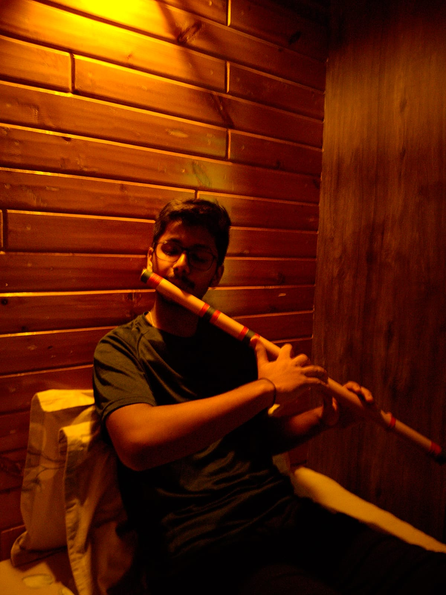

Hindraj Mali
Core Member at Society of Robotics and Automation (SRA). Passionate about Computer Architecture, Reinforcement Learning, and Compilers.
I study how hardware and software work together—from low-level instruction set architectures and compiler transformations to training robust neural control policies for complex robotics locomotion.

About Me
I am Hindraj Mali, currently in my second year pursuing a Bachelor of Technology in Electrical Engineering at Veermata Jijabai Technological Institute (VJTI), Mumbai. As a core member of the Society of Robotics and Automation (SRA), I collaborate with fellow engineers to design, build, and simulate intelligent robotic systems.
My technical focus centers on the synergistic interaction between low-level computing architectures and algorithmic artificial intelligence. I am deeply interested in exploring how customized compute pipelines, instruction set designs, and optimizing compilers can accelerate learning algorithms and enable responsive, real-time autonomous robotics.
VJTI, Mumbai
B.Tech in Electrical Engineering (2nd Year Undergraduate)
SRA VJTI
Core Member, Society of Robotics and Automation
Classical Bansuri
Practitioner of Indian classical flute music
Core Interests
"Understanding how hardware and software work together."
Computer Architecture
Investigating microarchitecture, pipeline hazards, branch prediction, memory hierarchies, and ISA design (such as RISC-V). Focused on how instruction-level parallelism and hardware accelerators enhance throughput.
Reinforcement Learning
Developing and benchmarking deep reinforcement learning algorithms for robotics locomotion and dynamic control. Applying reward shaping and domain randomization to achieve robust sim-to-real transfer.
Compilers
Analyzing how high-level programmatic logic is transformed into optimized machine code through intermediate representations (IR), control flow graphs, loop optimizations, and register allocation.
Featured Project
Waddle
Bipedal Locomotion on the 17-DoF Open Duck Mini v2 Robot
Waddle investigates bipedal locomotion control using model-free reinforcement learning on the 17-Degrees-of-Freedom (17-DoF) Open Duck Mini v2 robotic platform. The project systematically explores training stable, natural walking policies in simulation.
Algorithm Comparison
Implements and compares Proximal Policy Optimization (PPO) and FlashSAC to benchmark sample efficiency, policy stability, and convergence characteristics under continuous action spaces.
Custom Reward Formulation
Engineered multi-component reward functions that penalize joint torque spikes, torso tilt, and foot dragging while incentivizing stable linear velocity tracking and periodic foot contact cycles.
Gait Stability & Robustness
Applied physics randomization (ground friction, external lateral push disturbances, link mass distribution) to ensure locomotion policies maintain balance and avoid catastrophic falls.
Beyond the Terminal
Classical Bansuri (Flute)
Outside of computer systems and engineering coursework, I am an active student and practitioner of the Indian classical bamboo flute (Bansuri).
Classical music and computer systems share an inspiring parallel: both are rooted in rigorous foundational principles—timing, harmonic structure, and mathematical precision—while providing boundless room for creative exploration and improvisation.
Open Source & Code
Live repositories synced directly from @hindraj123.
Connect
Always open to discussions on computer architecture, robotics research, and engineering collaborations.